During breaks, RSIGuard can show videos. There are 31 built-in stretch videos, and you can also extend RSIGuard to show any YouTube videos or YouTube channels.
The built-in videos and any YouTube videos/channels are shown in the stretch list which you can reorder. You can also enable/disable individual entries.
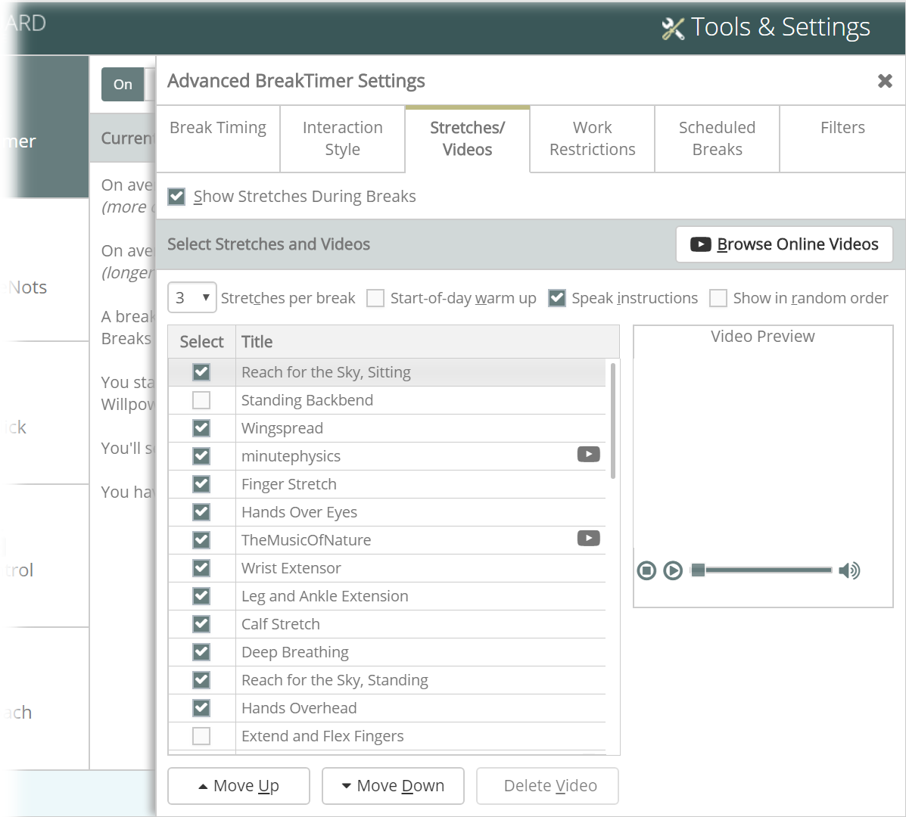
The most important thing you can do when you get a break reminder from RSIGuard's BreakTimer is ... to take the break. Some people find that watching interesting videos during a break can help them stop work tasks and begin to relax. The Online Videos feature can help.
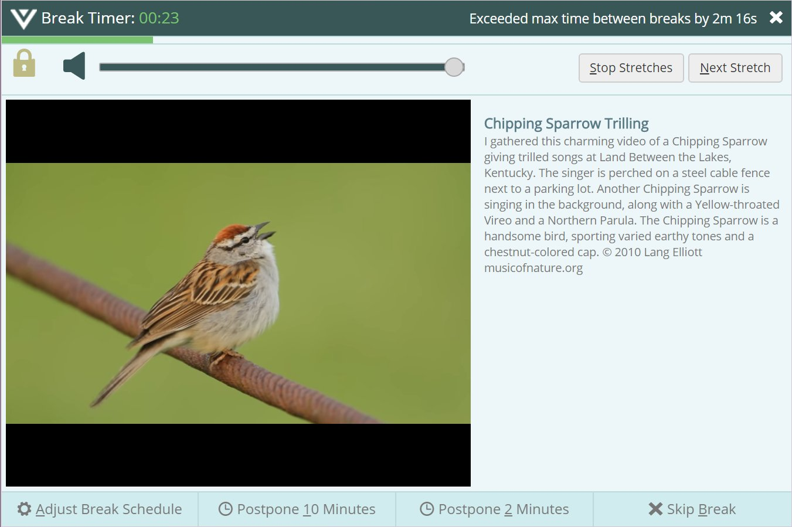
You can configure BreakTimer to show videos from YouTube. To add YouTube channels (or individual videos) to your video rotation, click Browse Online Videos (or press Alt+B).
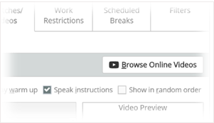
You will be presented with the option to select a channel from the list of YouTube channels your organization has made available to you, or from a default list if you downloaded RSIGuard directly from the RSIGuard website. You also can add your own favorite channels (some organizations may limit you to specific channels, or may disable this feature entirely).
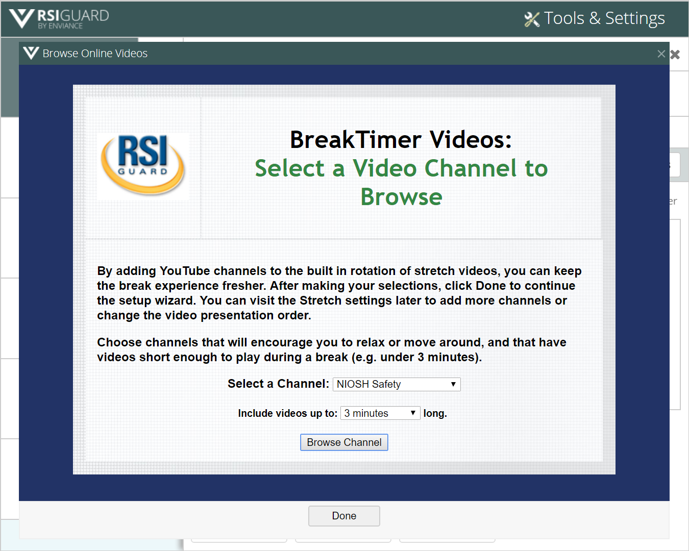
To add channels that aren't listed in the dropdown, select "Your Favorite Channel..."
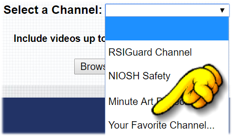
You'll be asked to enter the channel's name. To find a channel's name on YouTube, visit any video that's on the channel, and click on the Channel Name below the lower-left corner of the video:
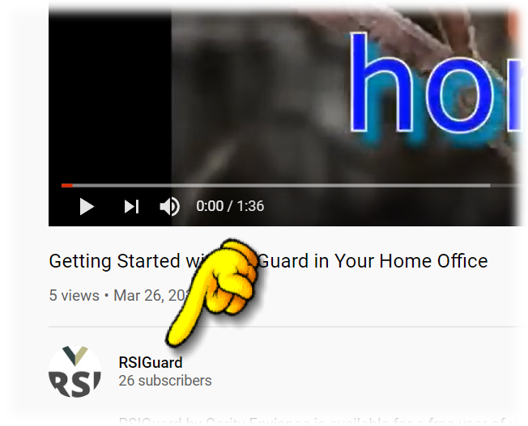
Then, in the URL, select the text after youtube.com/channel/ (for example, in this case, UCFrzvTSwJGUEnqtcVtAJ4WA):
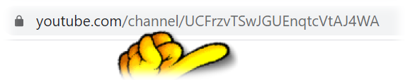
Sometimes the name will be something nice, like "Acme Safety", and sometimes it will be a series of characters as in the example above.
The Include videos up to N minutes long setting lets you exclude long videos. You probably don't want videos that are much longer than the breaks you want to take (though the break window will stay up long enough to let you finish a video, so you can view longer videos if desired).
After selecting the channel and the maximum video length, click Browse Channel to view the contents of that channel.
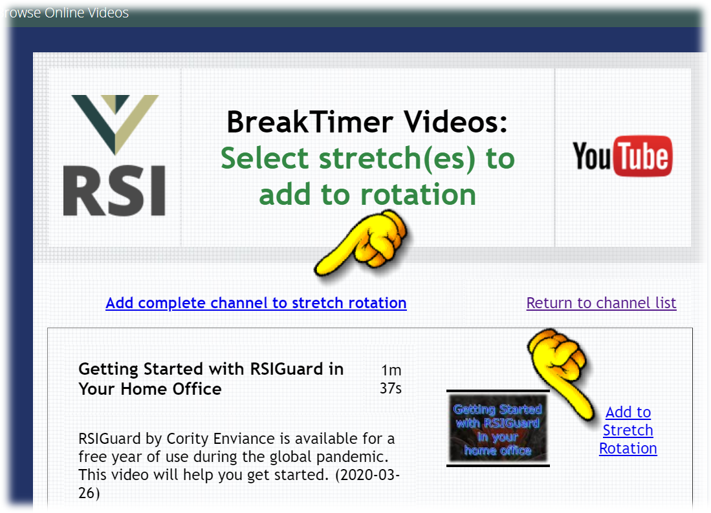
Click Add complete channel to stretch rotation to have BreakTimer cycle through the videos in this channel. By adding a channel, new channel videos will automatically be added to your BreakTimer video presentation when added to the channel. This is a great way to keep break time videos fresh.
If you only want to add an individual video from the channel, click the Add to Stretch Rotation link next to the video's thumbnail.
However, it's important to remember that break time should be a chance to stop working on the computer.
Consider:
After clicking Add complete channel to stretch rotation or Add to Stretch Rotation, you are returned to the Stretches and Videos list and can see the new entry.
If you don't want to add anything, click Return to channel list.
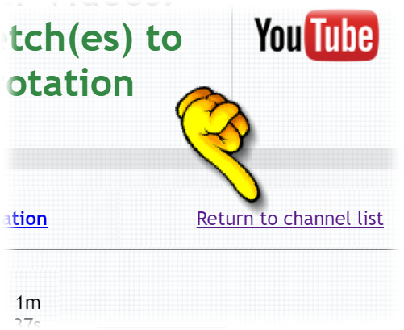
Videos or Video Channels that you added now appear in the Stretch list.
To make sure that breaks are not too full of video time and you still have time to get up and walk around, limit breaks to one YouTube video per break. To do this, use the Move Up and Move Down buttons to spread the YouTube videos evenly. E.g., if you view 3 videos per break, then make sure there are at least 2 regular stretch videos between each YouTube video.
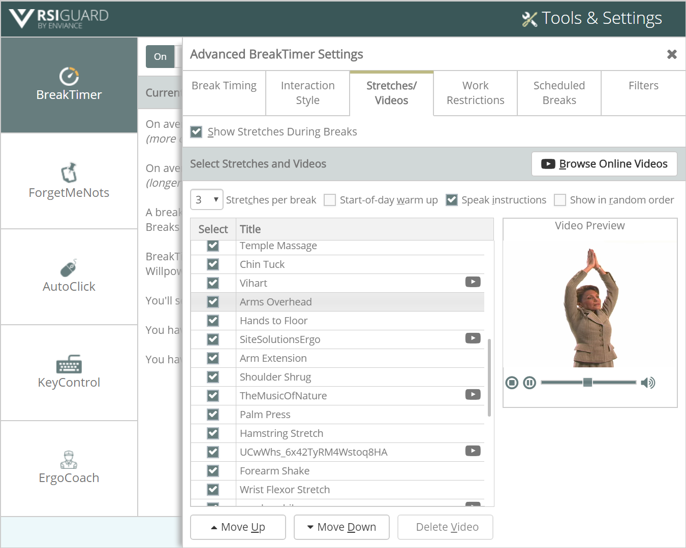
Online YouTube videos are played through a web browser in the break window. If you occasionally see this error:
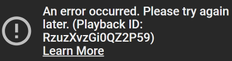
the cause is generally an active ad-blocker. You can either disable your ad blocker, or you can limit yourself to YouTube channels that do not have advertisements on videos.